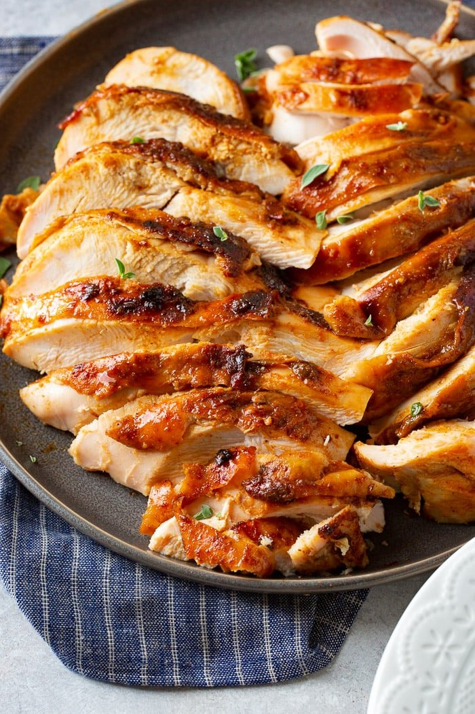

APPLE PECAN SMOKED TURKEY BREAST
Prep Time:
1 day
Cook Time:
12 hours
Total Time:
1 day 12 hours
Yield:
6 servings
Ingredients
For the smoker
Pecan Pellets or chips
Tin Pan
For the Brine
161 g Maple Syrup
55 g Brown Sugar
292 g Kosher Salt
992 g Apple Juice
248 g Orange Juice
907.19 g Chicken Broth
1 Teaspoon Smoked Paprika
2.95 kg Turkey Breast bone in
For the Turkey Rub
3 Tablespoons Brown Sugar
1.5 Tablespoons Smoked Paprika
2 Teaspoons Ground Mustard
1 Tablespoon Kosher
1 Teaspoon Onion Powder
1.5 Teaspoons Garlic Powder
1 Teaspoon Chipotle Chili Pepper Seasoning
1 Teaspoon Pepper
1.5 Teaspoon Cumin
6 Tablespoons Butter softened
177 g Pineapple Juice
177.44 g Water
For the Gravy
1 Tablespoon Cornstarch
1 Tablespoon Water
Steps
For the Brine
In a large pot, add the brine ingredients. Stir to combine.
Rinse the turkey breast thoroughly.
Place the turkey in the brine and put the lid on the pot. Refrigerate 10-12 hours or overnight.
For the Smoker
Remove the turkey from the brine, discarding all liquid and pat the turkey completely dry.
In a bowl, combine the spice ingredients and stir to mix.
Add the butter and stir again.
Rub the mixture all over under and over the skin of the turkey.
Heat a Traeger Smoker to 300 degrees with pecan pellets or chips.
Place the pineapple juice and water in a tin pan under the rack in the smoker.
Put the turkey, breast side down, on the smoker rack and close the lid.
Smoke for 3 to 3 1/2 hours depending on your smoker.
Remove the turkey to rest for 20 minutes under tented foil, reserving the drippings in the tin pan.
Slice the turkey and serve with gravy.
For the Gravy
Pour the drippings into a Gravy Fat Separator .
Heat a skillet to medium high heat and pour off the drippings, avoiding too much fat.
Whisk together the cornstarch and water and as the drippings begin to simmer, whisk in the cornstarch slurry.
Continue to whisk as the gravy thickens and serve immediately.
Turkey Basics
A frozen turkey will need thaw 24 hours per every 5 pounds.
Turkey will need to smoke for 25-30 minutes per pound.
Safe internal temperature for a turkey is 165 degrees F in the breast.
Turkey Timeline
Remove turkey from freezer to thaw in the fridge: 2 days ahead of time (Tuesday afternoon – Wednesday evening)
Brine: 10-12 hours (Wednesday evening – Thursday morning)
Turkey smokes: 3-3.5 hours
Turkey rests: 20 minutes
Notes
You may use apple juice or apple cider. If you don't have either, Place 1 Cup of Apple Cider Vinegar in a cup and fill the rest with water.
Smoked turkey can be frozen for up to 3 months.
Gallery

MENU